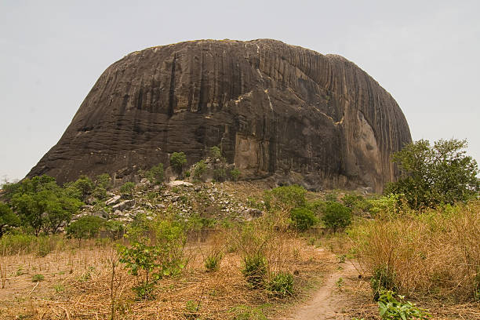
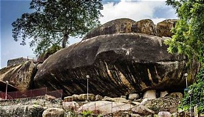
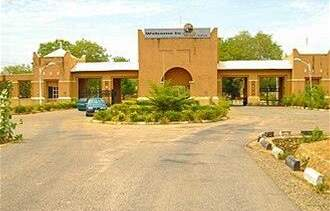

Zuma Rock
A famous natural rock formation located near Abuja.


Nigeria is a country in West Africa. It has over 200 million people. The official language is English. the currency is the Nigerian Naira. It is the most populous country in Africa and the seventh most populous in the world.
Capital: Abuja
Population: Over 200 million
Language: English
Currency: Nigerian Naira

Temperature: 28°C
Condition: Partly Cloudy
Wind: 10 km/h
Wind Chill: N/A
A famous natural rock formation located near Abuja.

Olumo Rock is a famous landmark and tourist attraction in Abeokuta, Ogun State.

Yankari National Park is known for its wildlife, natural springs, and beautiful scenery.
